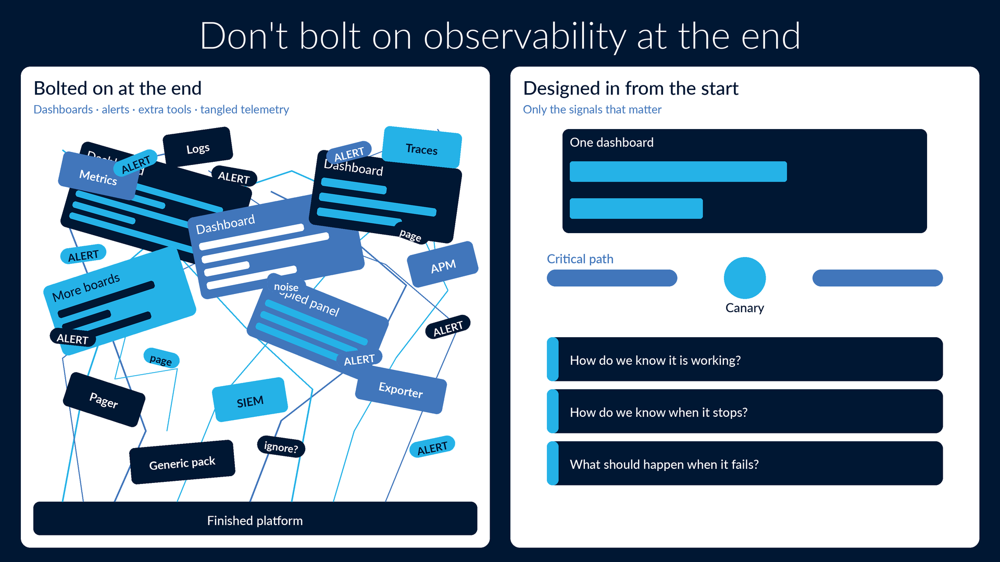

Don't bolt observability onto your platform at the end
One of the most expensive mistakes in platform engineering is treating observability and alerting as something to add once the platform is "finished". By then, the architecture is complex, deadlines are tight, and nobody has had enough time to decide which signals actually matter. The result is often a platform that technically works, but becomes difficult to operate when something goes wrong.
I believe observability should be designed into the platform from the beginning.
One of the most useful patterns I've used on multi-tenant platforms is the canary: a continuous health check that proves an important part of the platform is actually working. For example, a canary could periodically verify that an egress path can reach an on-premise service and receive a valid response. Another could verify that the pipeline used to build and deploy tenant applications is still working end-to-end.
These checks give the platform team something much more useful than a collection of infrastructure metrics: evidence that a critical capability actually works.
As each platform capability is built, add its canary. Over time, you build a simple view of the health of the platform's critical paths.
This also catches regressions early. I've seen platforms where something broke because of a change made weeks earlier, with nobody noticing until an unrelated problem forced engineers to investigate it. A useful canary can turn that investigation from hours of detective work into a failed check with a clear starting point.
The other reason to start early is that good observability is hard. The objective isn't to collect every metric, create hundreds of dashboards and generate an alert for every unusual event. Less is often more. The important question is: Which signals tell us that something is wrong, and what action should somebody take when they change? An alert that doesn't trigger a response is probably not an alert worth having.
Starting early gives the platform team time to discover which signals actually matter as each component is designed. The result is usually a much smaller, more useful observability system than the collection of generic dashboards and alerts that often gets added just before production.
When building a new platform, I would want every important capability to answer three questions:
- How do we know it is working?
- How do we know when it stops working?
- What should happen when it fails?
If you can answer those questions from the beginning, observability becomes part of the platform rather than another project that follows it.
What about your organisation? How early do you build observability into your platforms?